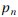
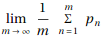
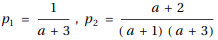
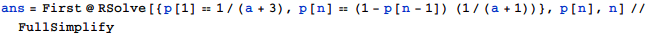
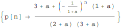
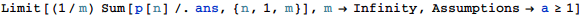
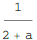

東京大学 2014年 理科 第2問
問題
aを自然数(すなわち1以上の整数)の定数とする。
白球と赤球があわせて1個以上入っている袋Uに対して、次の操作(*)を考える。
(*) 袋Uから球を1個取り出し、
(i) 取り出した球が白球のときは、袋Uの中身が白球a個、赤球1個となるようにする。
(ii) 取り出した球が赤球のときは、その球を袋Uへ戻すことなく、袋Uの中身はそのままにする。
はじめに袋Uの中に、白球がa+2個、赤球が1個入っているとする。この袋Uに対して操作(*)を繰り返し行う。
たとえば、1回目の操作で白球が出たとすると、袋Uの中身は白球a個、赤球1個となり、さらに2回目の操作で赤球が出たとすると、袋Uの中身は白球a個のみとなる。
n回目に取り出した球が赤球である確率をとする。ただし、袋Uの中の個々の球の取り出される確率は等しいものとする。
(1)  を求めよ。
を求めよ。
(2) n≥3に対してを求めよ。
(3) を求めよ。
解答
(1)
1回目に赤球が出るのは、a+3個の中から1個ある赤球が出たとき。
2回目に赤球が出るのは、1回目にa+3個中a+2個ある白球が出て、2回めにa+1個中1個ある赤球が出たとき。
よって

(2)
n≥2のとき、n回目に赤球が出るのは、n-1回目に白球が出て、n回目に赤球が出たとき。
従って漸化式を立てて解くと、


(3)
極限を計算させる。


補足・感想
ちょっと面倒な計算部分をMathematicaにやってもらっただけで、手順としては手計算と変わらない。